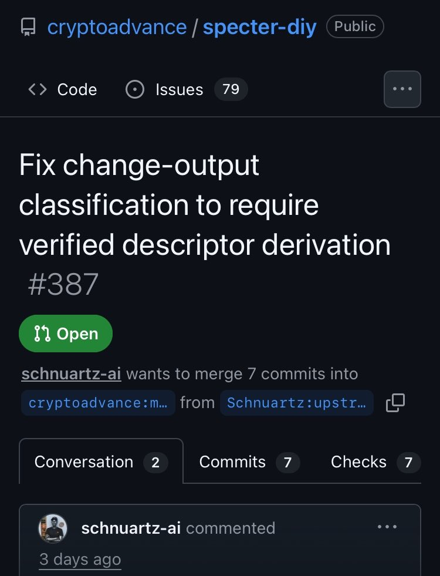

스팩터 DIY(specter-diy)는 비트코인 하드웨어 지갑(오프라인 서명 기기)에 들어가는 오픈소스 펌웨어다.
비트코인 거래를 만들 때, 보통 내가 보내고 싶은 만큼만 상대방한테 가고 나머지(잔돈)는 다시 내 지갑 주소로 돌아온다. 이걸 "체인지(change) 출력"이라고 부른다. 지갑 소프트웨어는 이 잔돈 출력을 화면에 굳이 안 보여주고, "이건 내 돈이니까 신경 안 써도 돼"라고 자동으로 숨겨버리는 게 보통이다.

1. 근데 그거, 컴퓨터 말만 믿고 있었다
문제는 지금까지 이 기기가 "이게 잔돈이 맞나"를 판단할 때, 연결된 컴퓨터(호스트)가 보내주는 정보를 그대로 믿고 있었다는 거다.
근데 그 컴퓨터가 악성코드에 감염됐거나 공격자한테 조작당한 상태라면? 사실은 공격자 주소로 돈이 빠져나가는 건데, 기기한테 "이건 잔돈이야, 신경 안 써도 돼"라고 거짓말을 할 수 있었다. 그러면 사용자는 그 출력을 화면에서 보지도 못하고 그냥 서명해버린다.
내 잔돈검증기 글에서 계속 얘기했던 그 시나리오다. 코디네이터(와치온리 앱)를 100% 신뢰하면 안 되는 이유.
2. PR #387, 이번엔 기기가 직접 계산한다
이번 PR(#387)이 이 부분을 고쳤다. 이제는 호스트가 주는 정보를 무조건 믿지 않고, 기기 스스로 "이 주소가 정말 내 지갑에서 나온 잔돈 주소가 맞는지"를 직접 암호학적으로 재계산해서 확인한다.
계산 결과가 실제 출력 주소랑 정확히 일치할 때만 잔돈으로 인정하고, 조금이라도 애매하거나 확인이 안 되면 무조건 안전한 쪽 — 잔돈이 아닌 것으로 취급해서 사용자한테 보여주는 쪽 — 으로 처리하도록 바꿨다.
정리하면, "기기가 스스로 검증 안 하고 컴퓨터 말만 믿다가 돈을 잃을 수 있는 보안 구멍"을 막은 수정이다. 테스트 41개 전부 통과했고, 다른 개발자(al-munazzim) 리뷰도 승인받았다. 다만 아직 최종 병합은 안 되고 Open 상태다.
이런 일이 진짜 생기다니, 참 요즘 무섭다.
엑스(X)의 '비미사' 계정은 역시 팔로잉해줘야 한다.
그리고 이거, 내 홈페이지에 있는 PSBT 잔돈검증기가 바로 이런 상황 대비하려고 만든 거다. 쓰세요. 날 못 믿겠으면, 직접 만들어 쓰세요.